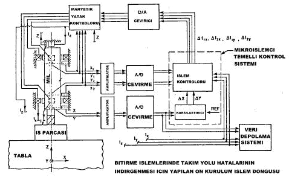

|
9.8.4.
Hatalarýn Ýndirgenmesi
Maryland
Üniversitesi ile manyetik yatak sistemleri, Cinnitti Milacron,
Westinghouse gibi CNC devlerinin birleþerek gerçekleþtirdikleri
dik iþleme merkezlerinde hatalarýn düzeltilmesi ve kontrol
altýna alýnmasý programýný baþarýyla yürütmektedirler. Ana
strateji, test makinesinde karmaþýk hatalarýn tecrübesel olarak
belirlenmesidir. Bunu ön plana alan araþtýrmacýlar uzunca
bir süre kesme kuvveti hatalarý modeliyle baþlayarak doðrusal
kontrol projesinin yerine getirirerek, iþleme esnasýnda parça
üzerindeki hatalarýn azaltýlmasý ile sonuçlandýrmýþlardýr.
Þekil 9.8' de bu proje ile ilgili bir düþey iþleme merkezine
bir manyetik yatak uygulanmýþtýr. Manyetik yataðýn mil kontrolü
için blok bir diyagram kullanýlmýþtýr. meydana gelen hatalarýn
karmaþýk bir kesme modelleri oluþturularak kontrol üniteleri
sayesinde anlýk olarak bu hatalarý indirgemiþlerdir.

Þekil 9.8. Bitirme Ýþlemlerinde Takým Yolu Hatalarýnýn Ýndirgenmesi
Ýçin Yapýlan Ön Kurulum Ýþlem Döngüsü
Araþtýrmanýn
güncel içeriði aþaðýdaki uygulamalarý içermektedir;
1. Uç frezesi operasyonlarýnda, statik ve dinamik hatalarýn
genelleþtirilmesi için uygundur.
2. Takým yolu hatalarýnýn belirlenmesi için uzman bir sistemdir.
3. Stokastik hata, doðrulanmasý ve düzeltilmesi için geliþtirilen
uzman bir sistemdir.
4. Manyetik millerin üzerinde bulunan hatalarýn indirgenmesi
için kontrol üniteleri geliþtirilir ve yerine getirilmesi
için iþleme sokulur.
5. Manyetiksel askýda olan mil ile uyumluluk içersindedir.
Teste uygunluk ve modellerin geçerli kýlýnmasý ve allogaritmik
kullaným CNC dik iþleme merkezleri için uygundur.
9.9.
Üç Fazlý Bir Asenkron Motorda Manyetik Süspansiyonlu Yatak
Uygulamasý
Manyetik
süspansiyon ve levitasyonun halihazýrdaki popülaritesi þüphesizki
yüksek hýzlý yer taþýmacýlýðý tasarýmlarýnýn olabilirliðinden
kaynaklanmaktadýr. Manyetik süspansiyon ve levitasyonun üstünlüðü
ve heyecan verici olmasýna raðmen, sürtünmesiz yataklarda
süspansiyon tekniklerinin uygulanmasýnda büyük sýnýrlamalar
vardýr. Bunlar, toleransýn çok az olmasý, az güç sarfiyatý,
küçük aralýðý ve küçük ebattýr. Böylece, kontrollu DC elektromýknatýs
þemalarý, diðer itici levitasyon tekniklerinden daha fazla
dikkati üzerinde toplamaktadýr. Planlanan prototip sistemi
bir stator, demir nüvesiz sincap kafesli bir rotor, rotor
milinin süspansiyonu için elektromýknatýs gurubu ve foto-dönüþtürücüler
gurubunun geri-besleme yaptýðý kompanzasyon devrelerinden
oluþmaktadýr. Prototip sistemi bir laboratuvar gösteri aygýtý
olarak amaçlandýðýndan mekanik rulmanla ulaþýlan 1500 dev/dak
lýk hýzlara ulaþýlmaya çalýþýlmamýþtýr. Manyetik süspansiyonlu
yatak sistemi, üniversite eðitim programlarýnda elektrik eðitiminde
örneðin, elektromanyetik tasarým, kararsýz bir kontrol sisteminin
PD kontrollu kompanzasyonu ve güç yükselteci tasarýmý gibi
prensiplerde çok etkili görsel bir gösteri saðlamaktadýr.
Sistem 350 dev/dak lýk hýzlarda mekanik ve manyetik yataklar
arasýnda iyi bir karþýlaþtýrma özelliðine sahiptir. Manyetik
yatak ile motorun boþ çalýþma güç kayýplarýnda %15 lik bir
azalma göstermektedir. Motorun gürültüsü de düþük bir seviyeye
inmiþtir.
10 - SONUÇLAR ve DEÐERLENDÝRMELER
Ýlk
kullanýlan manyetik yatak, 1987 yýlýnda Nova'ya 176.000$ kazandýrmýþtý.
O günden bu yana manyetik yataklarýn kazandýracaðý alternatifler
daha da arttýðý düþünülecek olursa bugünkü geldiði konumunu
tahmin edebilmekteyiz. Ayrýca kompresörlerde kullanýlan diðer
yataklar, yaðlayýcý pompalamak için gereken fuzili 225 Kw
veya yaklaþýk 300 BG enerjiyi, manyetik yataklar sadece 4
Kw olarak kullanmaktadýr. Kuru salmastralarýn ve manyetik
yataklarýn uygulanma maliyeti, yaðlama sisteminden vazgeçilmesiyle
saðlanan para tasarrufuyla beraber düþünülecek olursa, amorti
süresi, revizyon 4.4 sene ve yeni bir makine için bir seneden
daha azdýr. Bu alanda paranýn ötesinde, güvenlikte de ilerleme
kaydedilmiþtir.
Manyetik
yataklar rijit þekilde monte edilmezler. Aðýrlýk daðýlýmlarýnýn
yönlendirilmesine uygun olarak serbestçe dönerler. Geometrik
eksenleri yerine eylemsizlik eksenleri, etrafýnda döndükleri
eksendir. Sonuç; kendiliðinden saðlanan balanstýr. Þaft üzerine
etkileyen tüm aerodinamik kuvvetler stator mýknatýslarý aracýlýðýyla
karþý kuvvet üretilerek ortadan kaldýrýlabilir. Bu özellikleri
sebebiyle NASA uzay sistemlerinde bu teknolojiden yararlanmasýna
sebep olmuþtur.
1985
yýlýndan itibaren kullanýlma ve geliþtirme aþamasý içersinde
bulunan manyetik yataklar, o zamanlar kullanýldýðý sistemi
bir anda kâra geçirebilecek düzeyde olmasý bugünü düþündüðümüzde,
ilerleyen teknoloji sayesinde elde edilecek çok yaygýn kullaným
alanlarý ve üstün özellikleri ile hayrete düþürecek bir yatak
sistemi olarak tanýmlamamýz mümkündür. Sonuç olarak bu yapýlan
çalýþma ile manyetik yataklar hakkýnda tanýtým yapýlmýþ ve
bu tanýtýmýn yanýsýra günümüzde yapýlan manyetik yataklar
ile ilgili yeni çalýþmalara da yer verilmiþtir. Diðer yataklarla
karþýlaþtýrýlmasý yapýlarak manyetik yataklarýn ayýrt edici
yönleri vurgulanmýþtýr. Tasarým aþamalarýna deðinilmiþ bu
aþamada yapýlan hesaplamalardan bahsedilmiþtir. Konu geniþletilerek
bu alanda tasarým deneylerinin test edilmesi için yazýlan
program detaylý olarak anlatýlmýþtýr.
11- KAYNAKLAR
1.
Electrical Business, Kasým 89, pp 37 - 38.
2
. Committee organized during Mag'97 Conference on Magnetic
Bearings Maurice Brunet (S2M) agrees to draft initial recommendation
for ammendments to API 617 (22 Aug 1997).
3.
James J. Haggerty, National Aeronautics and Space Administration
Office of Space Access and Technology, Commercial Development
and Technology Transfer Division, Spinoff 1996,
4. D.K. Anand, J. A. Kirk M. Anjanappa, Research In The Flexible
Manufacturing Laboratory, Aug.1998.
5.
N. G. Albritton and J. Y. Hung, "Observers for sensorless
control of industrial magnetic bearings, " IEEE Industrial
Electronics Conference, Orlando, FL, Nov 1995.
6. S. Nolan and J. Y. Hung, Control Systems Laboratory, Department
of Electrical Engineering, Auburn University, "Technology
advances for magnetic bearings, " Space Technology and
Applications International Forum, American Institute of Physics
Conference Proceedings 361, p. 169-174, Albuquerque, NM, Jan
1996.
7.
Trumper, D. L., "Magnetic Suspension Techniques for Precision
Motion Control, " Ph.D. Thesis, Department of Electrical
Engineering and Computer Science, Massachusetts Institute
of Technology, September, 1990.
8.
F. Xia, N. G. Albritton, J. Y. Hung, and R. M. Nelms, "A
hybrid nonlinear control scheme for active magnetic bearings,
" 3rd International Symposium on Magnetic Suspension
Technology, Tallahassee, FL, Dec 1995.
9. J. Y. Hung, "Magnetic bearing control using fuzzy
logic, " IEEE Transactions on Industry Applications,
v. 31, n. 6, p. 1492-1497, Nov / Dec 1995. Original presentation
at IEEE Industry Applications Society Annual Meeting, Toronto,
Ontario, CANADA, pp. 2210-2215, Oct 1993.
10.
J. Y. Hung, R. M. Nelms, F. Xia, and M. Story, "Three-mode
variable structure control of a pulse density modulated current
feedback amplifier, " 1995 IEEE Symposium on Industrial
Electronics, Athens, GREECE, pp. 736-740, July 1995.
11.
J. Y. Hung, "Nonlinear Magnetic Bearing Control Using
Fuzzy Logic, " an invited paper for the IEEE International
Workshop on Neuro-Fuzzy Control, Muroran, Hokkaido, JAPAN,
March 1993.
12.
Trumper, D.L., "Nonlinear Compensation Techniques for
Magnetic Suspension Systems, " NASA Workshop on Aerospace
Applications of Magnetic Suspension Technology, Sept.25-27,
1990.
13.
Trumper, D.L. and Queen, M.A., "Precision Magnetic Suspension
Linear Bearing, " NASA International Symposium on Magnetic
Suspension Technology, Aug. 19-23, 1991.
14.
Williams, M. E., and Trumper, D. L., "Materials for Efficient
High Flux Magnetic Bearing Actuators, " NASA 2nd International
Symposium on Magnetic Suspension Technology, NASA Conference
Publication No. 3247, Part 1, Seattle, WA, pp. 135-145, August
11-13, 1993.
15.
Kim, W.-J., and Trumper, D.L., "Precision Control of
Planar Magnetic Levitator, " proceedings of the 1998
ASPE Annual Meeting, St. Louis, MO., October 25-30, 1998.
16.
Eric Maslen, Üniversity of Virginia Department of Mechanical,
Aerospace, and Nuclear Engineering Charlottesville, Virginia,
January 5, 1999.
17.
Kim, W.-J., and Trumper, D.L., "Six-Degree-of-Freedom
Planar Positioner with Linear Magnetic Bearings/Motors, "
6th International Symposium on Magnetic Bearings, MIT, Cambridge,
MA, Aug. 5-7, 1998.
18.Holmes,
M. L., Trumper, D.L., Hocken, RJ., "Magnetically-Suspended
Stage for Accurate Positioning of Large Samples in Scanned
Probe Microscopy, " 6th International Symposium on Magnetic
Bearings, MIT, Cambridge, MA, Aug. 5-7, 1998.
19.
Fittro, R.L. A High Speed Machining Spindle with Active Magnetic
Bearings: Control Theory, Design and Application, Ph.D. Dissertation,
University of Virginia, August 1998.
20.
Holmes, M. L., Trumper, D.L., Hocken, RJ., Machine Design,
"Magnetic Bearings Holds Spindle For Milling", November
9, 1989, pg. 56.
21.
Nohavec, D.R., and Trumper, D.L., "Super-Hybrid Magnetic
Suspensions for Interferometric Scanners, " JSME International
Journal, Series C, Vol. 40, No. 4, Special Issue on Magnetic
Bearings. / Internatýonal Magnetýc Bearýng Center, Dec, 1997.
22.
Brad E. Paden, PhD EE University of California, Chen Chen,
Tsinghua University in China, Alvin R. Paden, Oregon State
University, MMSB Inc., Applications of Magnetic Bearings,
Fabruary, 2000.
23.Trumper,
D. L., Olson, S. M., and Subrahmanyan, P. K., "Linearizing
Control of Magnetic Suspension Systems", IEEE Transactions
on Control Systems Technology, Volume 5, Number 4, pp. 427-438,
July 1997.
24.Ludwick, S. J., "Modeling and Control of a Six Degree
of Freedom Magnetic / Fluidic Motion Control Stage, "
S.M. Thesis, Department of Mechanical Engineering, Massachusetts
Institute of Technology, February 1996.
25.Williams,
M. L., and Trumper, D. L., "Precision Magnetic Bearing
Six Degree of Freedom Stage, " NASA 3rd International
Symposium on Magnetic Suspension Technology, Dec. 13-15, Tallahassee,
FL, 1995.
26.
Williams, M.E. and Trumper, D.L., "Materials for Efficient
High-Flux Magnetic-Bearing Actuators, " Proceedings of
the 2nd International Symposium on Magnetic Suspension Technology,
Seattle, WA, NASA Conference Publication #3247, Part 1, pp.
135-145, Aug. 11-13, 1994.
27.
Michael Baloh, Paul Allaire, Naihong Wei, Jeff Decker, and
Roger Fittro (Aston University), University of Virginia, Artificial
Heart Pump Prototype- Electromagnetic Bearings, Dec. 1999.
28.
Edgar Hilton, Paul Allaire, Naihong Wei, Marty Humphrey, and
Takis Tsiotras (Georgia Tech.), University of Virginia, Magnetic
Bearing Controls Test Rig, Dec. 1999.
29. Paul ALLAÝRE, Alok Sinha (Pen State University), Jun -
Hon Lee, Michael Baloh, and Gang Tao, University of Virginia,
Sliding Mode Controls for Rotors in Magnetic Bearings, Dec.
1999.
30.
Robert Rockwell, Paul Allaire, Catherine Lebedzik, Mary Kasarda
(Virginia tech.), Andy Provenza (NASA Lewis) and Gerry Brown
(Nasa Lewis, University of Virginia, Magnetic Bearing Finite
Elemant Loss Computer Program, Dec 1998.
31.
Trumper, D.L., Holmes, M., Behrozjou, R., and Batchelder,
D., "Atomic-Scale Motion Control via Hybrid Fluid/Magnetic
Bearings, " 4th International Symposium on Magnetic Bearings,
ZYrich, Switzerland, August 25, 1994.
32. American Machinist, "Magnetically Levitated Spindle
to Debut, Delivers Up to 52 kW at 40,000 RPM", August
1989, pp. 78-79.
33.
Nonami, K., et. al.,"H µ Control of Milling AMB Spindle",
FourthInternational Symposium on Magnetic Bearings, 1994,
Zurich, pp. 531-536.
34.
Fedigan, S.J., Williams, R.D., Shen, F., and Ross, R.A., "Design
and Implementation of a Fault Tolerant Magnetic Bearing Controller",
5thInternational Symposium on Magnetic Bearings, Kanazawa,
Japan, August 28-30, 1996.
35
Stephens, L.S. and Knospe, C.R., "m-Synthesis Based,
Robust Controller Design for AMB Machining Spindles",
5th Int. Symp. on Magnetic Bearings, Kanazawa, Japan, August
1996.
36.
Young, P.M. Robustness with Parametric and Dynamic Uncertainty,
Ph.D. Dissertation, California Institute of Technology, 1993.
37.
Williams, M.E. and Trumper, D.L., "Precision Magnetic
Bearing Six Degree of Freedom Stage," Proceedings of
the 9th Annual Meeting of the American Society for Precision
Engineering, October 2-7, 1994, pp. 65-68.
38.
Williams, M. E., and Trumper, D. L., "Materials for Efficient
High Flux Magnetic Bearing Actuators," NASA 2nd International
Symposium on Magnetic Suspension Technology, NASA Conference
Publication No. 3247, Part 1, Seattle, WA,August,11-13,1993,pp.135-145.
39.
Poovey, T., Holmes, M., and Trumper, D.L., "A Kinematically
Coupled Magnetic Bearing Test Fixture," Proceedings of
the 7th Annual Meeting of the American Society for Precision
Engineering, Oct. 20-23,1992.
40.
Schwartz, L.S. and Trumper, D.L., "Magnetic Optical Bearing
Design for Minor Wavelength Scans in a Spaceborne Interferometer,"
5th International Symposium on Magnetic Bearings, Kanazawa,
Japan, August 28-30, 1996.
41.
Williams, M.E. and Trumper, D.L., "Materials for Efficient
High-Flux Magnetic-Bearing Actuators," Proceedings of
the 2nd International Symposium on Magnetic Suspension Technology,
Seattle, WA, Aug. 11-13, 1994, NASA Conference Publication
#3247, Part 1, pp. 135-145
42.
Poovey, T., Holmes, M. L., and Trumper, D. L., "A Kinematically
Coupled Magnetic Bearing Calibration Fixture," Precision
Engineering, Volume 16, Number 2, April 1994.
Baþa
dön
Not:
Bu raporun kontrol sistem formülasyonlarý içeren bazý bölümleri,
çoðunluðun ilgisini
çekmeyecek fazla detaylara sahip olmasýndan dolayý çýkarýlmýþtýr.
|